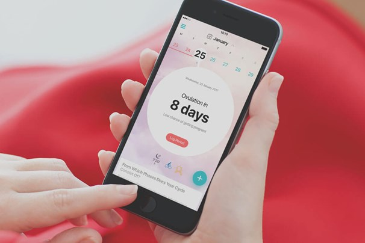

My Calendar es una aplicación muy fácil de usar que ayuda a las mujeres a llevar un registro de sus períodos, ciclos, ovulación y días de concepción . Ya sea que estés preocupada por la concepción, el control de la natalidad, la anticoncepción o tener períodos regulares, la aplicación My Calendar puede ayudarte.
Ve a la tienda de aplicaciones y busca "My Calendar o Mi Calendario Menstrual". Descárgala e instálala en tu dispositivo.
Abre la aplicación, selecciona "Empecemos" si es que es primera vez que te unes a dicha aplicacion y completa los campos requeridos con tu información personal.
Al rato de presionar comencemos te dará 3 preguntas sobre tu periodo y tu ciclo las cuales tienes que responder con mucha certeza.
La aplicacion My Calendar esta disponible principalmente para dispositivios Android, donde se puede descargar como tiendas como Google Play o Uptodonw, tambien tiene versiones especificas para Windows, sin embargo no se encuentra para iOS.
En la pagina de inicio, toca el boton ¨Inicio del periodo¨ , ¨Fin del periodo¨ o ¨Editar periodo¨
Visita la sección de soporte en el menú principal y envia un correo a policy@simpledesign.Itd